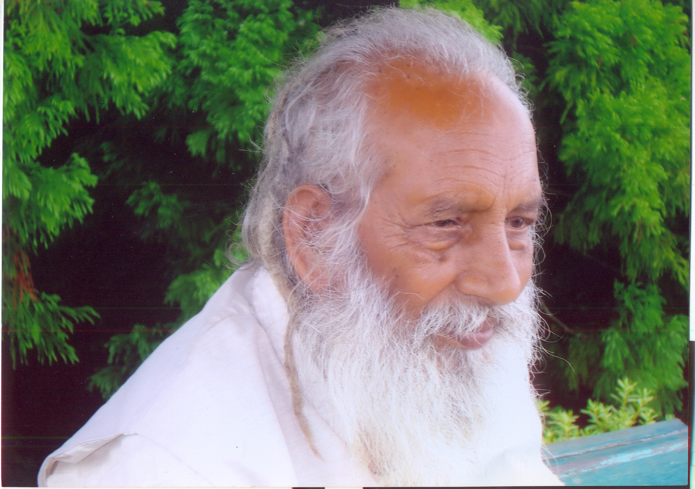

गुरुजी के परिचय में क्या कहना चाहिए ये वैसी ही बात है कि कोई पूछे समुद्र में पानी कितना है? सूरज में रोशनी और आसमान का अंत कहाँ है? इन सभी का उत्तर शायद कोई कोई, दार्शनिक या तत्त्ववेत्ता दे दे, मगर गुरुजी के गुणों का वर्णन ब्रह्माण्ड की कोई लेखनी, कोई सोच या कोई कल्पना नहीं कर सकती। फिर भी हमने उनके संगसंग में रहकर अपने क्षुद्र अनुभव से इस असीम प्रतिभा को जाना जाता है। वे थे - गुरुजी आत्मशक्ति रूप से साधारण से-जन - पात्र, धर्मपालक, प्रेम-प्रिय, सेवा-समर्पित और उच्च विचारों से ओत-प्रोत। उन्होंने अपने हर कृत्य से, आचरण से और व्यवहार से एक-एक शब्द में धर्म का स्वरूप दिखाया। गुरु स्वरूपाव जी महाराज कबीर, गोरखनाथ, दयानंद और गुरुनानक जैसे उच्चकोटि के गुरुप्रणीत की परम्परा के संत थे। इन्होंने साधारण गृहस्थों में रहते हुए धर्म-प्रणीत की और समाजानन्द के लिए एक सच्चा उदाहरण प्रस्तुत किया। इनके जीवन का एकमात्र ध्येय, कल्याण, कल्याण और कल्याण ही था।